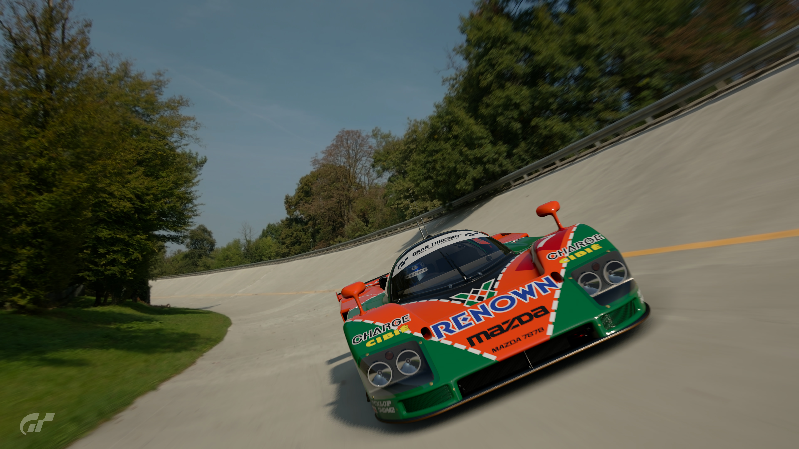
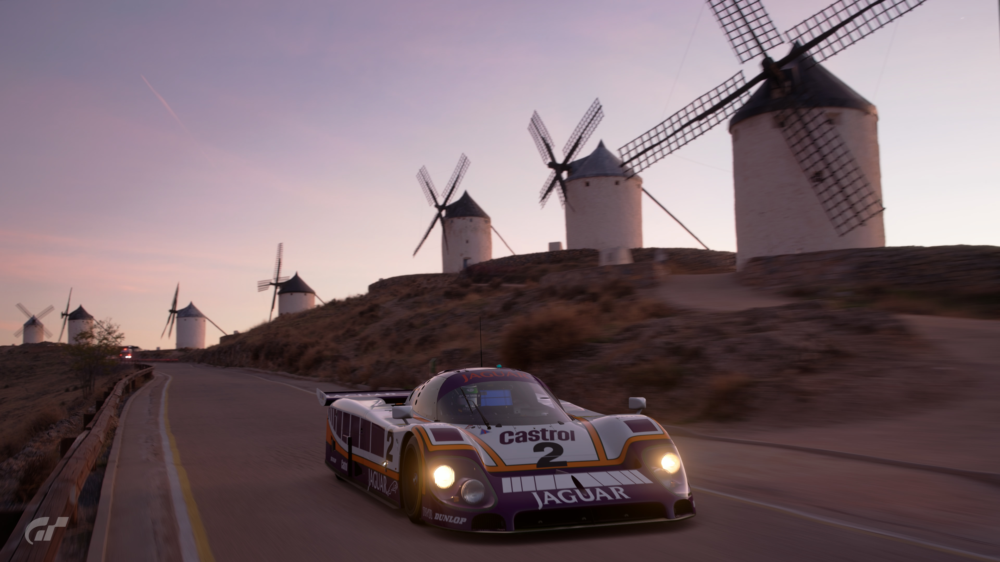
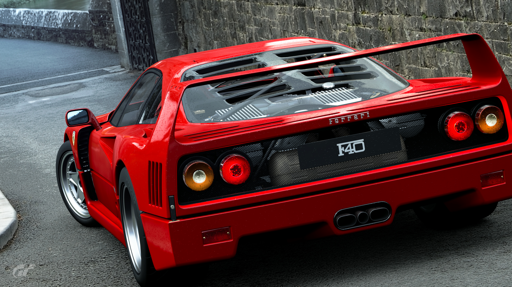
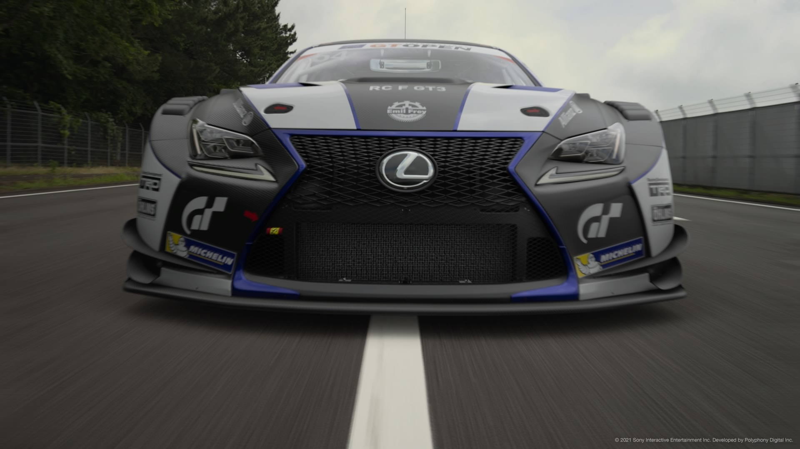
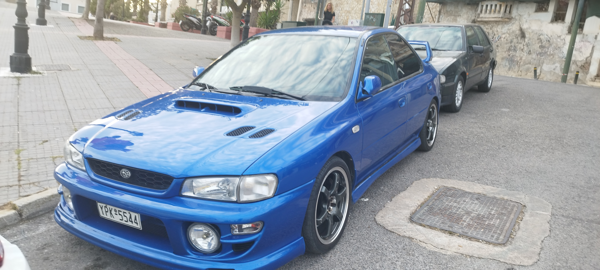
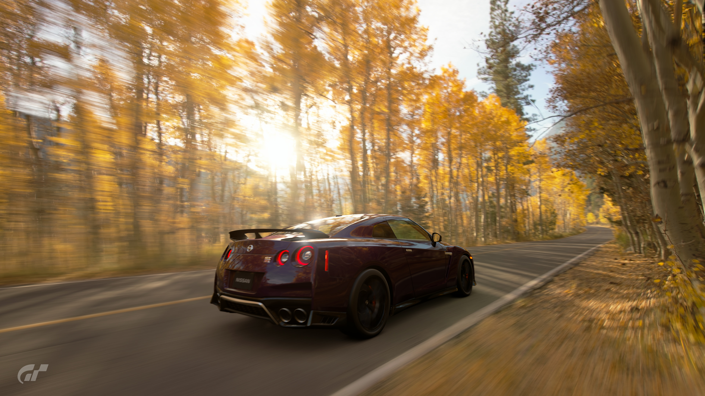
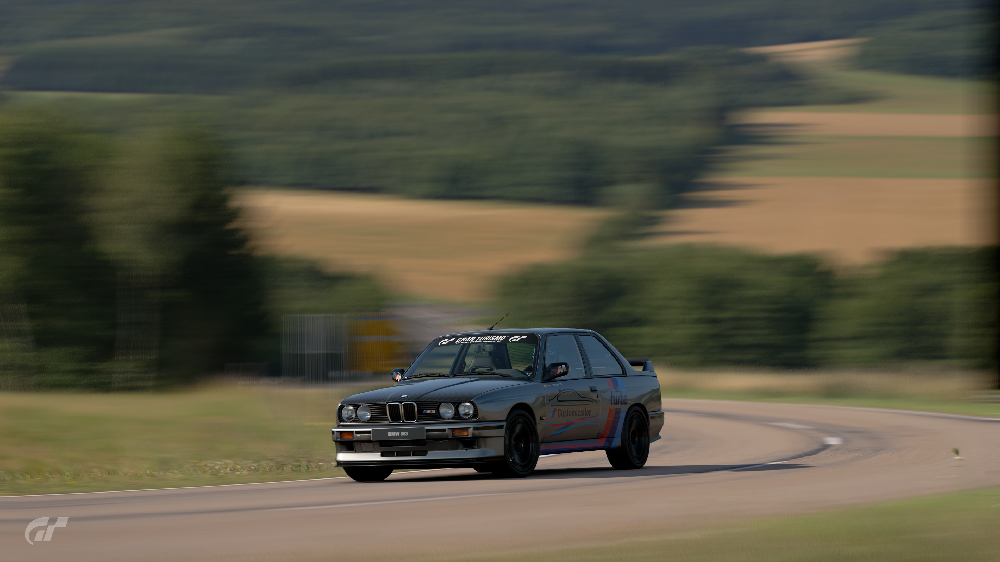

Mazda buscaba demostrar que una berlina familiar y fiable podía ser, ante todo, un coche
emocionante, deportivo y con alma.
Y lo consiguió con el Mazda 6, un modelo que se ha convertido en un referente de la marca y que ha
sido galardonado con numerosos premios.

Mazda 787b
El Mazda 787b es un automóvil de carreras desarrollado por Mazda para competir en el campeonato de
resistencia.
Fue el primer automóvil japonés en ganar el 24 Horas de Le Mans en 1991.
Equipa un motor rotativo de 4 rotores que entregaban 700cv a 9000 rpm.

Jaguar XJR-9
El Jaguar XJR-9 es un automóvil de carreras desarrollado por Jaguar para competir en el campeonato de
resistencia.
Estuvo en activo entre 1988 y 1990.
Equipa un motor V12 de 7 litros que da 760cv a 7200 rpm.

Ferrari F40
El Ferrari F40 es un automóvil de lujo y rendimiento desarrollado por Ferrari para celebrar el cuarto
centenario de la marca y el ultimo desarrollado por Enzo Ferrari.
Fue el primer Ferrari en utilizar un chasis de fibra de carbono.
Equipa un motor V8 de 2.9 litros que entregaba 478cv a 7000 rpm.
Mercedes-Benz SL 65 AMG Black Series
El Mercedes-Benz SL 65 es un automóvil de lujo y rendimiento desarrollado por Mercedes-Benz.
Fue la respuesta directa e independiente de AMG para vengarse de McLaren
Equipa un motor V12 de 6.0 litros que entrega 671cv a 5400 rpm.

Lexus RC F GT3
El Lexus RC F GT3 es un automóvil de carreras desarrollado por Lexus para competir en el campeonato
de IMSA.
Esta en activo desde 2017.
Equipa un motor V8 de 5.4 litros que da 543cv a 7000 rpm.
Mitsubishi Lancer Evo X
El Mitsubishi Lancer Evo X es la decima y ultima generación del Mitsubishi Lancer Evolution, un
automóvil de rally desarrollado por Mitsubishi para competir en el grupo
A de rally.
Estuvo en activo entre 2008 y 2015.
Equipa un motor boxer de 4 cilindros de 2.0 litros que da 295cv.
Lamborghini Diablo GT
El Lamborghini Diablo GT es un superdeportivo desarrollado por Lamborghini
Estuvo en activo entre 1999 y 2000.
Equipa un motor V12 de 5.7 litros que daba 575cv a 7100 rpm.
Porsche 911 Carrera 2.7 RS
El Porsche 911 Carrera 2.7 RS es un automóvil de carreras desarrollado por Porsche para competir en
el
grupo 4 de la fia y en rallies.
Estuvo en activo entre 1972 y 1972.
Equipa un motor boxer de 6 cilindros que da 210cv a 6300 rpm.

Subaru Impreza WRX STI
El Subaru Impreza WRX STI es un automóvil de rally desarrollado por Subaru para competir en el grupo
A de rally.
Estuvo en activo entre 1993 y 2000.
Equipa un motor boxer de 4 cilindros de 2.0 litros que da 218cv a 5600 rpm.

Nissan R35 GT-R
El Nissan R35 GT-R es un superdeportivo desarrollado por Nissan.
Ofreciendo un mejor rendimiento por menos de la mitad del precio que sus competidores.
Equipa un motor V6 de 3.8 litros que da 565cv.

BMW M3
El BMW M3 es un automóvil de carreras desarrollado por BMW para competir en el campeonato de
DTM.
Estuvo en activo entre 1987 y 1992.
Equipa un motor de 4cilindors de 2.3 litros que da 200cv.